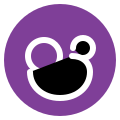
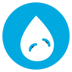
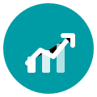
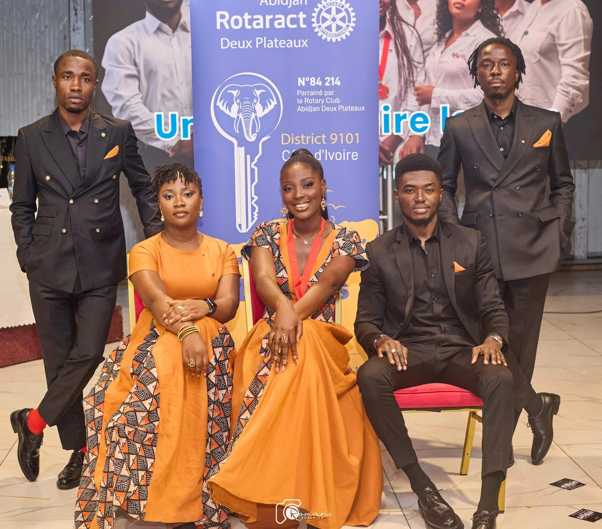

Paix & prévention des conflits
Faciliter le dialogue, promouvoir la médiation et former des leaders capables de rassembler.
Dialogue & médiationAbidjan, Côte d'Ivoire
Rotaract Abidjan Deux Plateaux
Chaque action que nous menons s'inscrit dans les axes stratégiques du Rotary International. Voici les domaines où nous concentrons notre énergie, notre savoir-faire et nos partenaires.
Faciliter le dialogue, promouvoir la médiation et former des leaders capables de rassembler.
Dialogue & médiationDépistages, campagnes de vaccination et sensibilisation pour stopper les maladies évitables.
Santé publique
Accompagnement périnatal, dons de sang et soutien nutritionnel pour protéger les familles.
Prévention & soins
Forages, systèmes de filtration et formation aux bons gestes pour réduire les maladies hydriques.
Eau potable pour tousClasses de soutien, dotations en livres et mentorat pour stimuler la réussite scolaire.
Jeunesse & avenir
Appui aux micro-entreprises, formations à l'entrepreneuriat et accès au financement.
AutonomisationReboisement urbain, recyclage créatif et sensibilisation pour des quartiers plus verts.
Planète positive
Depuis 1988, notre club rassemble des jeunes professionnels déterminés à servir Abidjan. En 37 ans d’existence, nous avons mené plus de 100 actions d’intérêt public pour l’éducation, la santé, l’environnement et le développement de nos communautés.
Agir vite, bien et ensemble pour Abidjan Deux Plateaux.
Présidente 2025‑2026
Le Rotaract Club Abidjan Deux Plateaux rassemble de jeunes professionnels et étudiants engagés dans le service communautaire, le leadership et l'amitié internationale, avec le soutien du Rotary Club Abidjan Deux Plateaux.
À travers nos Actions d'Intérêt Public, nous œuvrons chaque année pour améliorer les conditions de vie dans les domaines de la santé, de l'éducation, de l'environnement et de l'autonomisation des jeunes et des femmes.
Nous accordons également une place centrale au développement professionnel de nos membres grâce à des formations, ateliers et programmes de mentorat, afin de former des leaders responsables et impactants.
Portés par un fort esprit de camaraderie et de solidarité, nous croyons qu'un club uni est un club plus efficace au service de la communauté.
Rejoignez-nous pour servir, apprendre, évoluer et bâtir ensemble un impact durable.
Découvrez nos dernières actions au service de la communauté
Un aperçu des priorités de la Présidente pour le Rotaract Abidjan Deux Plateaux
Agir utilement au cœur d'Abidjan et au‑delà
Aligner ambition, responsabilité et transparence
Faire rayonner le Rotaract 2 Plateaux
Restez informé des actions et des moments forts du club
Découvrez les valeurs et les opportunités qui font du Rotaract une expérience unique
Développez vos compétences en leadership, gestion de projet et communication à travers des formations et des responsabilités concrètes.
Participez à des actions concrètes qui améliorent la vie de votre communauté et créent un impact positif durable.
Rejoignez un réseau mondial de jeunes leaders, participez à des échanges internationaux et élargissez vos horizons.
Ils nous font confiance et nous accompagnent dans nos actions
Abidjan Deux Plateaux
Notre club parrain, qui nous guide et nous soutient dans toutes nos actions.
Entreprises & ONG
Des entreprises et organisations locales qui croient en notre mission.
Réseau mondial
Nous sommes membres du Rotary International, présent dans plus de 180 pays.
Écoles & Universités
Partenariats avec des établissements d'enseignement pour nos actions éducatives.